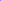
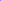
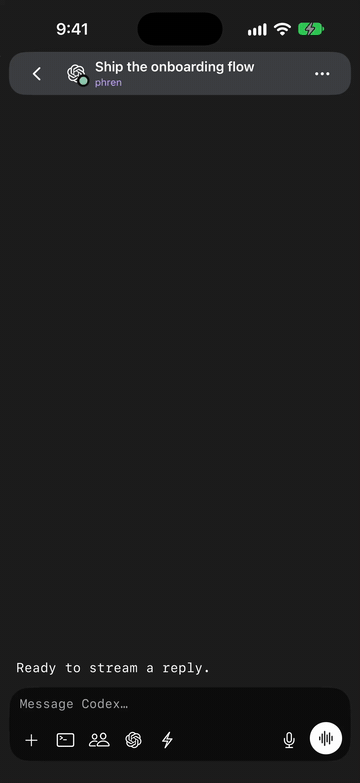
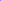
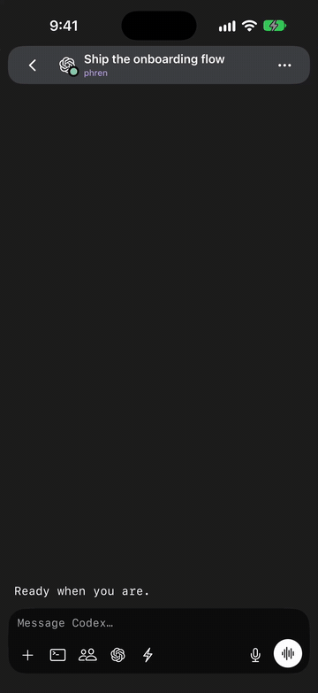
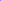
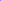
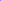
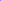

Your memory.
Your agents.
In your pocket.
A native iPhone app for your phren store and for the coding agents running on your own computers. Talk to them, approve what they ask, send them work and see what they know. Nothing goes through a phren server, because there isn't one.
In TestFlight testing · version 1.0.26 · iOS 17 or later
Screenshots use sample projects and sample computers.



The main flows
Chat with every session
Claude Code, Codex, Copilot and OpenCode sessions on your computers show up in Agents, sorted by what needs you. Open one to chat: send messages, photos and files, follow tool calls and diffs as the agent works, or open its terminal. File paths in a reply open the file with syntax colors. One settings sheet holds the model, its effort and, for Claude Code, the permission mode.

Talk to your agents
Talk mode is a hands-free conversation. Speak, and your words are sent when you pause. The reply is read back, with each word highlighted as it plays. Keep talking while the agent works to steer it. Talk keeps going with the phone locked or on AirPods, and you can mute the microphone and still hear replies. Swipe a draft left to discard it.


Approve from anywhere
When an agent asks for permission, answer in the chat, from a notification, or from the Live Activity or Agents widget on the Lock Screen, behind Face ID. Approve all answers every waiting request at once. Approval rules let you choose commands that always ask or are always denied, per project or agent.
Continue in another account or computer
Continue in… opens a sheet organised by Claude account across this and your linked computers, with each account’s email, plan, and 5-hour and weekly usage. Pick one to carry the chat over with a written hand-off. Near a usage limit, the chat offers another account or agent above the composer. Moving a conductor needs an updated Phren Hook.

Changes, history and pull requests
Git in the chat options shows changes with staging, history, branches, pull requests and the repository’s other worktrees, in a side-by-side or inline diff. Code shows what your agents changed today, the project’s files and each function’s definition and uses.

Memory
Findings, notes, tasks, truths and the review queue from every store you attach, on a map of how they connect or as a list. Findings show “May be out of date” when the file they cite has changed. Edits apply on the phone at once, wait offline and go to GitHub as commits authored by you. Save a note about a function from the code browser and your agents recall it later.

Schedules
Run an agent prompt on a timetable, on the computer you choose, and get a notification when it finishes or needs you. Schedules show as cards, an Agenda or a Board, with each one’s next and last run.

More in the app
- A conductor for all your computers. Start a conductor and tell it what you want done. It sees the live sessions on every linked computer, hands work to one or starts a new worker, and tells you when a worker finishes, needs you or stops. Computers shows each machine's load, memory and disk.
- Start an agent in a project folder on any computer, in a new worktree if you like, with the agent, model, effort and permission mode in one sheet. Quick chat asks about a project from its memory.
- Terminal opens the exact Herdr pane, with a key bar, shortcut panels, pinch to resize and image uploads. Servers with only SSH open a plain terminal, and Set up a new server gets a fresh machine ready in one pass.
- Tasks and Search. Backlog, Active and Done with swipe actions, and search across every store.
- Web servers preview development servers on a computer, tunnelled over SSH. Simulators shows the iOS simulators booted on a Mac and lets you tap and type.
- Account usage shows Claude, Codex, Copilot and OpenCode limits and reset times per computer, in the app and as a widget.
Only on iPhone
- Siri and Shortcuts. "Add a phren task" works from a locked phone. "Talk to my conductor" opens your conductor with talk mode on. Add Task and Add Note can sit on the Action Button.
- Live Activities. One activity for all your agents on the Lock Screen and Dynamic Island, with Deny and Approve when one asks for permission. Answers still need Face ID or your passcode.
- Controls. Talk to Conductor and Pause All Agents for Control Center and the Lock Screen.
- Widgets for the Home Screen and Lock Screen: your memory count, top active task, agents and usage.
- On-device summaries. On iPhones with Apple Intelligence, long replies are summarized on the phone before they are spoken.
Install
phren for iPhone is in testing through Apple's TestFlight. Install TestFlight, open the invite link we sent you, and tap Install. We are preparing the App Store release; this page will say so when it ships. Want an invite? Write to us.
Then follow Get started: pair a computer, connect your memory, and open your first chat.
What you need
- Phren Hook on each computer that runs your agents.
npx --yes @phren/cli@latest pairinstalls it and pairs the phone in one step. See Phren Hook. - Herdr on that computer for chat, status, approvals and starting agents. What works without Herdr.
- SSH turned on, and Tailscale when you are away from home. No public port, Funnel or relay.
- A phren store, read from a paired computer or synced through a GitHub repository you own. Agents and terminals work without GitHub.
Permissions it asks for
- Camera: to scan a computer's pairing code, and when you take a photo for an agent.
- Microphone and Speech Recognition: only while you dictate or use talk mode.
- Local Network: to reach computers on your Wi-Fi over SSH.
- Notifications: to tell you when an agent is waiting on you, if you turn them on.
Decline any of them and the rest of the app still works.
Where your data goes
Store data moves between the phone and GitHub, or between the phone and your own computer. Session data comes from your own computers over SSH. We receive nothing: no analytics, no crash reports, no telemetry. The privacy policy lists, item by item, what the app keeps on the phone and what leaves it.
The iPhone app is closed source. The CLI, Phren Hook and everything the app talks to on your computers are open source.